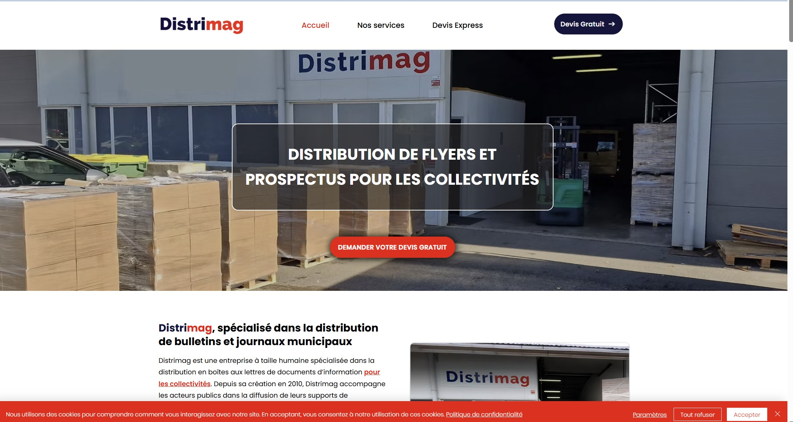

Firmware • Capteurs • MQTT
Systèmes embarqués & IoT
Conception de prototypes connectés intégrant capteurs, microcontrôleurs, communication réseau et exploitation de données.
Découvrir →Des services adaptés aux projets techniques, académiques, associatifs ou professionnels : électronique, IoT, data, web et support numérique.
Conception de prototypes connectés intégrant capteurs, microcontrôleurs, communication réseau et exploitation de données.
Découvrir →
Exploitation de données issues de capteurs ou systèmes connectés pour le monitoring, l’analyse et l’aide à la décision.
Découvrir →
Création de sites web modernes, portfolios, interfaces responsives et tableaux de bord simples.
Découvrir →
Réalisation de montages électroniques, tests, soudure, lecture de schémas et validation de prototypes.
Découvrir →
Support réseau, administration de base, bonnes pratiques numériques et sensibilisation à la cybersécurité.
Découvrir →
Création de supports visuels professionnels pour valoriser des projets, formations ou organisations.
Découvrir →Je commence par clarifier le besoin, identifier les contraintes, proposer une solution simple, réaliser une première version fonctionnelle, tester et améliorer progressivement.
Cette méthode permet d’avancer sans surcharger le projet, tout en gardant une base technique claire et évolutive.